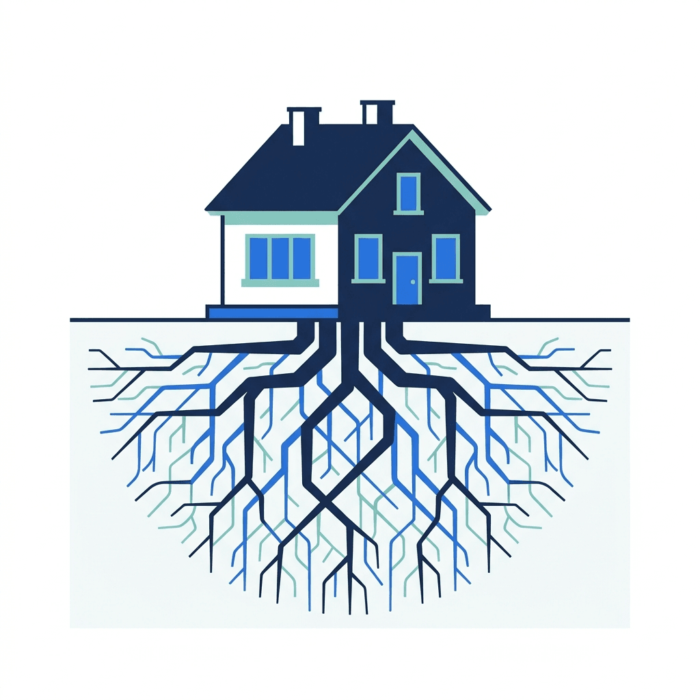
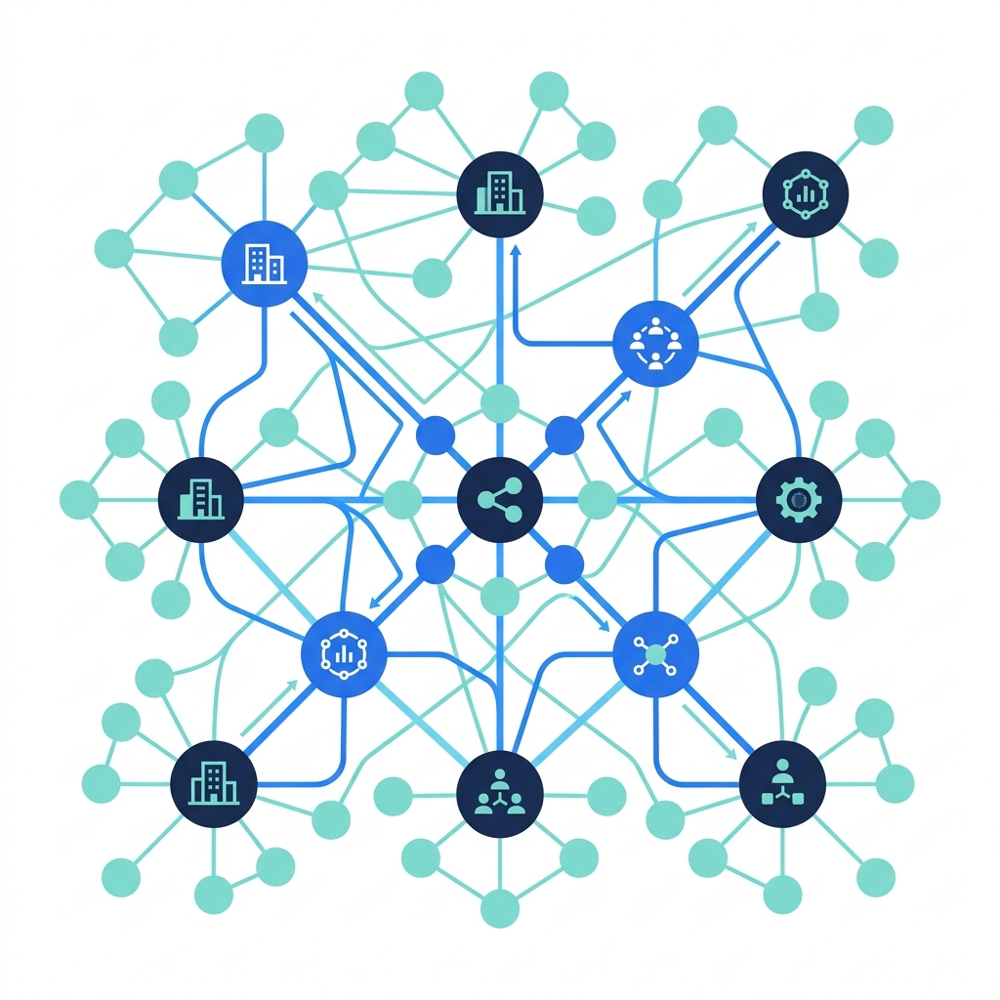
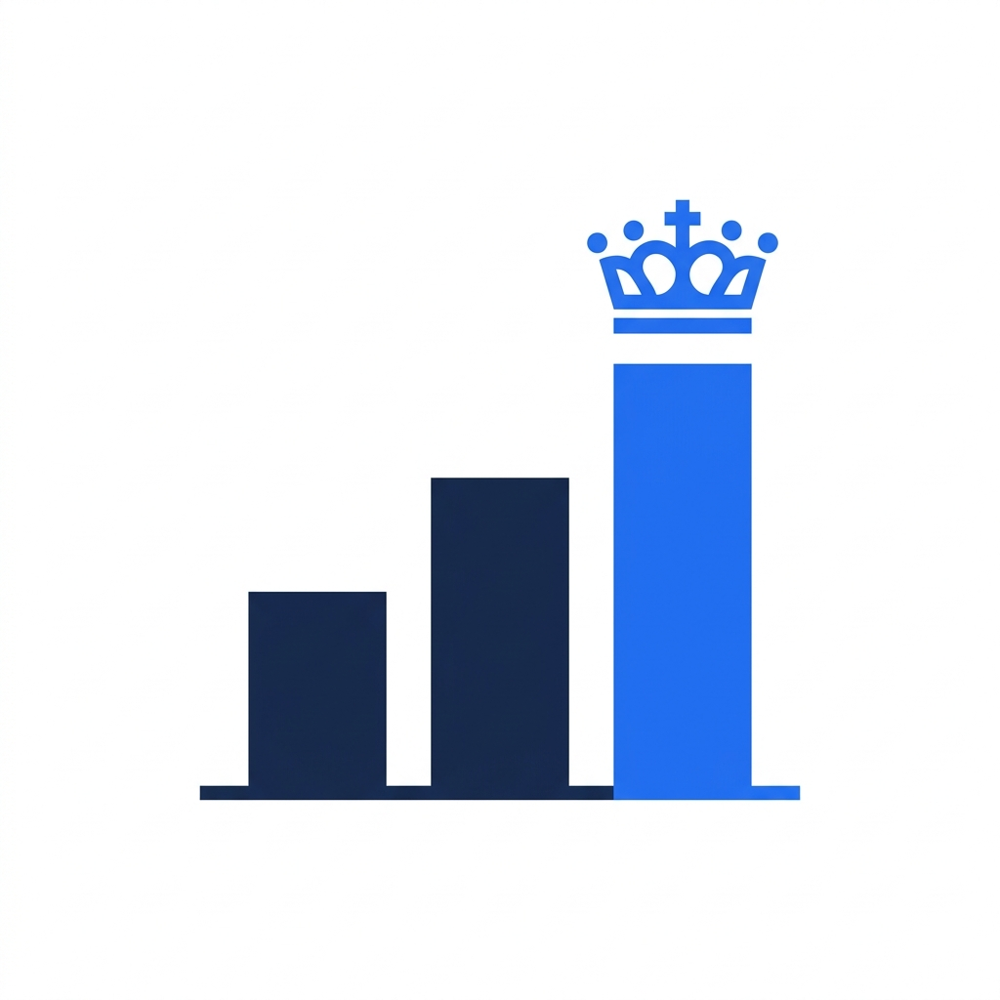
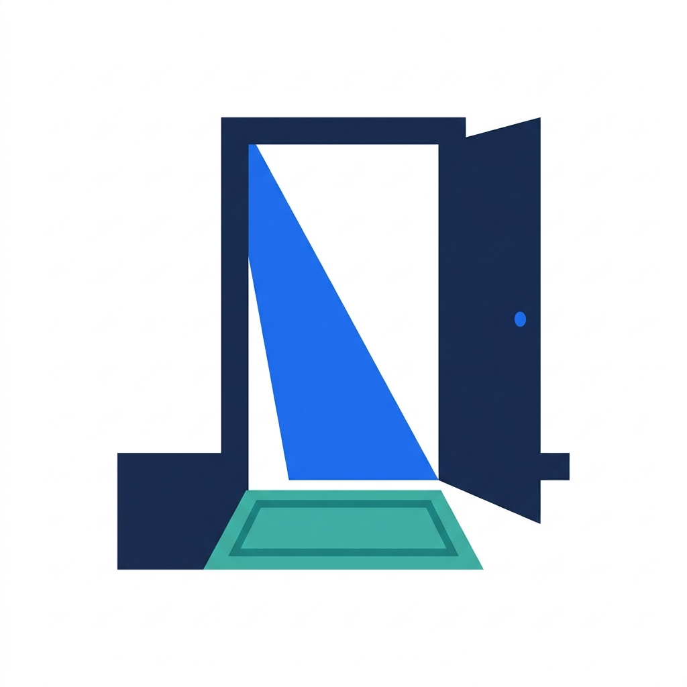

Du har brukt årevis på å bygge noe meningsfylt. Vi mener det fortjener et permanent hjem – ikke et treårig videresalg.
Du har bygget et fantastisk selskap. Du kjenner markedet, kundene og organisasjonen din – og vi stoler på at du fortsetter å lede selskapet du grunnla. Det endres ikke.
Det som endres, er rammene rundt deg. Barrierene som har holdt deg tilbake – et lokalt marked, teknisk gjeld, mangel på AI-kompetanse, å måtte gjøre alt selv – begynner å forsvinne. PubliX gir deg ressursene, nettverket og fellesskapet for å ta neste steg.
Vi er ikke et fond med en nedtellingsklokke. Vi er en permanent eier – støttet av Aspira Partners, som deler vår langsiktige overbevisning. Ditt neste kapittel starter her, og det finnes ingen kunstig sluttdato.

Ingen tvungne exits, ingen kunstige tidslinjer. PubliX er en permanent eier – støttet av Aspira Partners, som deler vår langsiktige overbevisning. Selskapet ditt vokser i sitt eget tempo.
Hvert selskap får et skreddersydd AI-veikart innen 90 dager. Fra produktfunksjoner til prosessautomatisering – vi integrerer kapasitet som selskapet ditt ikke kunne ha bygget alene.

Vi jobber utelukkende i én vertikal. Det betyr delt innkjøpskompetanse, delte kunder og kolleger som forstår rammeavtaler, ikke bare ARR.
ARR-forbedring – AI-drevet tilskuddsmatching ga målbar vekst i omsetning innen 6 måneder
Årlige besparelser – operasjonell automatisering frigjorde ressurser som ble reinvestert direkte i produktet
Fra første kravspesifikasjon til signert kunde i offentlig sektor – den raskeste produktlanseringen i PubliXs historie
Frigjort utviklerkapasitet – AI-assisterte verktøy er tatt i bruk i hvert selskap
Siden vi sluttet oss til PubliX, har vi lansert to helt nye AI-drevne produkter og hevet kompetansen til hele utviklingsteamet vårt. En slik transformasjon var rett og slett ikke mulig på egen hånd.

Alexander Törnqvist
Medgründer & administrerende direktør, digiPlant
Jeg hadde bygget Aspicore i over et tiår. Da det var på tide å tenke på neste generasjon, ga PubliX meg en vei som beskyttet teamet mitt, kundene mine og arven jeg hadde bygget – samtidig som de sørget for at selskapet fortsatte å vokse.

Harri Tanner
Gründer, Aspicore
Vi visste alltid at Sotender kunne fungere utenfor Finland, men vi manglet nettverket eller ressursene for å få det til. PubliX åpnet dører i Sverige i løpet av noen måneder – og nå planlegger vi vårt neste marked.

Janne Salmi
Medgründer & administrerende direktør, Koivu Solutions
Ingen overraskelser, ingen skjulte agendaer. Her er nøyaktig hva som skjer, trinn for trinn.
En avslappet, konfidensiell samtale mellom deg og vår ledelse. Ingen PowerPoints, ikke noe press. Vi ønsker å forstå selskapet ditt, reisen din og hva du tenker på. Du får en tydelig følelse av hvem vi er og hvordan vi jobber.


Vi signerer en gjensidig taushetserklæring og begynner å lære om virksomheten din mer i dybden – økonomi, kunder, produkt, team. Du lærer mer om oss. Dette er en toveis evaluering, og vi tar den på alvor.

Vi presenterer en skreddersydd verdiskapingsplan – hvordan selskapet ditt kan skalere gjennom nye markeder, delte kunder, AI-kapasitet og redusert teknisk gjeld som en del av PubliX. Sammen med denne mottar du et veiledende tilbud med en gjennomsiktig verdsettelsesmetodikk. Ingen komplekse strukturer.
En strukturert prosess der vi verifiserer detaljene sammen. Vi bruker erfarne rådgivere og gjennomfører prosessen med respekt for tiden din. De fleste gründere sier at det var her de innså at vi var annerledes – vi behandler selskapsgjennomgangen som et samarbeid, ikke et forhør.

Du blir en del av en gruppe gründerledede selskaper som bygger for allmennhetens beste. Teamet ditt, merkevaren din, kontoret ditt – alt forblir. Hva som endres: du får delt AI-kapasitet, AI-automatisering av interne prosesser, muligheter for kryssalg, og kolleger som forstår markedet ditt.
Ingenting. Teamet ditt blir værende. Vi foretar ingen oppsigelser, vi «strømlinjeformer» ikke antall ansatte, og vi slår ikke sammen team til et felles servicesenter. Folkene dine er det som gjør selskapet ditt verdifullt – hvorfor skulle vi endre på det?
Nei. Produktbeslutninger forblir hos deg og teamet ditt. Vi tilbyr AI-kompetanse, teknisk støtte og strategiske innspill – men produktveikartet er ditt. Vi er operatører, ikke produktsjefer.
Vanligvis 3–5 måneder fra første samtale til avslutning. Vi stresser ikke, men vi drar heller ikke ting ut i tid. Tidslinjen avhenger i stor grad av kompleksiteten i selskapsgjennomgangen og din egen beredskap.
Ja – og vi foretrekker det sterkt. Hvert selskap i vår portefølje drives av den opprinnelige gründeren eller en håndplukket etterfølger. Vi investerer i gründere, ikke på tross av dem.
Det går også helt fint. Vi vil samarbeide om en overgangsplan som beskytter teamet ditt og selskapets kultur. Det er ingen brå overganger – du velger tempoet.
Vi bruker en transparent, markedsbasert metodikk som vurderer gjentakende inntekter, vekstkurve, markedsposisjon, kundekvalitet og teamets styrke. Du vil få se hele modellen – ingen svarte bokser. Vi presenterer verdivurderingen vår personlig, slik at du kan utfordre enhver antakelse.

En vekstvurdering er en seriøs, personlig analyse – ikke en salgspitch. Den er din å beholde, uansett om vi samarbeider eller ikke.
Hver søknad vurderes personlig av vår administrerende direktør